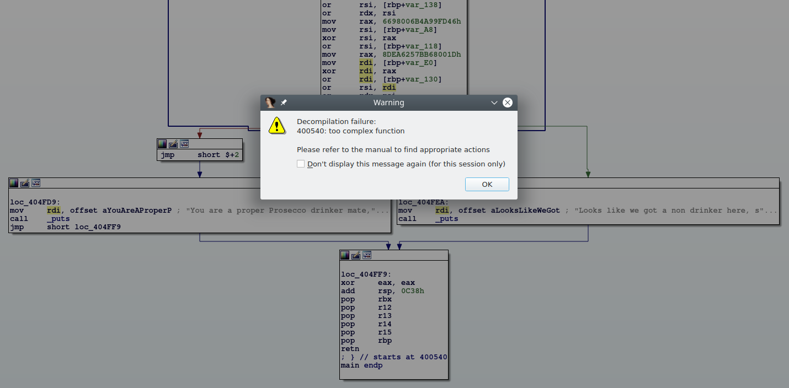

Dumbo: LLVM-based Dumb Obfuscator
Posted on Sat, 2019-02-23 in security
So you want to learn how to build the most awesome obfuscator known to human being? I've got you covered!
In this tutorial you will learn of sorts of obfuscation things. Like, obfuscators, what do they obfuscate? Do they obfuscate things? Let's find out!
Introduction
LLVM is one of the most amazing pieces of code someone could find on the Internet. It is a compiler that is widely used both in research and in practical applications because of its flexibility. Its main selling point is that it decouples the programming language it's compiling from the code generation.
Basically, things go like this:
Source code -> Language-independent Intermediate Language -> Executable
Now, let's assume you would like to write an obfuscator that takes some source code and turns it into a mess. That would be sweet, but it would be language-dependent.
Enter LLVM passes: it's very easy to write compiler passes in LLVM. This turns the pipeline above into:
Source -> IR -> Obfuscated IR -> Obfuscared Executable
The most awesome part of this process is that you don't need to care about the
Source -> IR step, as it's managed by some compiler front-end...
...which was written by someone else...
Sweet.
Setup
Throughout all this post, we'll be using LLVM version 7, installed on an
Ubuntu 18.04 system.
With minor adjustments to the build scripts, you can make it work on different
setups.
You can get LLVM 7 from here by adding the repos to
/etc/apt/sources.list.d/llvm.list:
$ cat /etc/apt/sources.list.d/llvm.list
deb http://apt.llvm.org/bionic/ llvm-toolchain-bionic-7 main
deb-src http://apt.llvm.org/bionic/ llvm-toolchain-bionic-7 main
Then you can go with the usual sudo apt update && sudo apt install clang-7.
The Heaviest Obfuscation Of The Universe
If you are a metal fan, this is the place where I recommend you put on your headphones and listen to some Gojira.
Let's think about obfuscation.
Our objective is to turn a simple program into a huge beast of unmanageable madness, so as to break any sane reverse engineer's mind or automated tool. In order to do this, we need to turn
...
if (c == 'a')
...
into something that looks like
...
if (mess(c) == mess('a'))
...
If we let the compiler optimize the right-hand side of the comparison, we would eventually get something that looks like
...
if (mess(c) == super_complex_expression)
...
This happens because the right-hand side of the expression is a constant and so
whatever transformation we apply can be computed by the compiler at compile
time.
If the mess(...) is too complicated, we have to help the compiler and give it
the final value, which is what we are going to do this time.
Now, what could mess(...) be?
Well, after thinking about it for hours and hours, you'll come to my same
conclusion: RSA encryption.
It's obvious.
What could possibly be more secure than a program that uses RSA to obfuscate its
secrets? Nothing, exactly.
Basically we want to turn our if into
...
if (pow(b, e, n) == pow('a', e, n))
...
with n = p * q and pow(a, b, c) being the
modular exponentiation function.
If you didn't know, that's exactly what Python's pow(a, b, c) does.
LLVM IR
As I said at the beginning of the post, we want to work at a programming language-independent level, which means we are going to deal with LLVM Intermediate Representation.
LLVM's IR is quite complicated, but you can learn it gradually by either looking up its documentation or by messing with the clang compiler.
Let's take a simple program simple.c:
#include <stdio.h>
int main(void) {
char c = getchar();
if (c == 'a') {
return 0;
} else {
return 1;
}
}
Yeah, yeah, I know. It's dumb. Just wait a sec, k?
This is its (slightly cleaned) IR:
define dso_local i32 @main() #0 {
%1 = alloca i32, align 4
%2 = alloca i8, align 1
store i32 0, i32* %1, align 4
%3 = call i32 @getchar()
%4 = trunc i32 %3 to i8
store i8 %4, i8* %2, align 1
%5 = load i8, i8* %2, align 1
%6 = sext i8 %5 to i32
%7 = icmp eq i32 %6, 97
br i1 %7, label %8, label %9
; <label>:8: ; preds = %0
store i32 0, i32* %1, align 4
br label %10
; <label>:9: ; preds = %0
store i32 1, i32* %1, align 4
br label %10
; <label>:10: ; preds = %9, %8
%11 = load i32, i32* %1, align 4
ret i32 %11
}
It's kind of low level, but we can still see what's going on.
%3 is a variable that gets the outputs of getchar().
Then, the program does icmp eq i32 %6, 97, which is a comparison between the
char we read and 'a' (97 in ASCII).
The last interesting bit is br i1 %7, label %8, label %9, which is a
conditional jump (or BRanch) which depends on %7.
Recalling what we said above, we want to turn %7 = icmp eq i32 %6, 97 into
%lhs = ...mess(%6)...
%rhs = ...mess(97)...
%7 = icmp eq i32 %lhs, rhs
br i1 %7, label %8, label %9
But first of all...
Building Blocks
In order for RSA to be secure, we need a decent amount of bits for the keys. We will assume 512 bits keys from here on. We don't really believe it's possible to crack a 512 bits key nor that quantum computing is going to be a thing.
Before coding the LLVM pass, we have to code some small helpers to handle the modular exponentiation of 1024-bits integers. Why 1024 instead of 512 you ask? Well, we need to perform operations (multiplications, etc...) on those 512-bits integers and that requires some additional space. Feel free to prove that 1024 is enough. Luckily for us, LLVM supports (almost) arbitrary integer sizes. Unfortunately for us, writing IR code is very time consuming and boring.
So we use a clever trick: we are gonna code _modexp() in plain C and than do
some kung-fu to automagically change its types from unsigned int (aka i32)
to i1024.
Here's modexp.c:
unsigned int _slow_mod(unsigned int a, unsigned int b) {
unsigned int x = b;
while (x <= (a >> 1)) {
x <<= 1;
}
while (a >= b) {
if (a >= x) {
a -= x;
}
x >>= 1;
}
return a;
}
unsigned int _modexp(unsigned int base, unsigned int exponent, unsigned int mod) {
unsigned int result = 1;
base = _slow_mod(base, mod);
while (exponent > 0) {
if (exponent & 1) {
result = _slow_mod(result * base, mod);
}
exponent >>= 1;
base = _slow_mod(base * base, mod);
}
return result;
}
if we do clang-7 -S -emit-llvm -o modexp.ll modexp.c, we are going to get a
_modexp function that works on 32-bit ints.
How can we fix that? sed it like it's 1999:
sed 's/i32/i1024/g' modexp.ll > modexp_wide.ll
sed -i '/!0/d' modexp_wide.ll
The first sed changes the IR code from i32 to i1024 bits integers.
The second one is just to fix some errors and it's not important.
I'm 100% sure they didn't teach you this trick in your compiler class.
If you want to see what modexp_wide's CFG looks like, here's an IDA Pro
screenshot:
Dumb Obfuscator
Dumbo is going to be a LLVM Pass, which basically means it takes LLVM IR as input and outputs a modified IR file.
I'm not going to go into the details of the implementation as the source code is full of comments, but the outline of the solution is this:
for function in program:
for basic_block in function:
for instruction in basic_block:
if instruction.type == icmp and instruction.op2.is_constant_integer():
e, n = generate_rsa_stuff()
instruction.op1 = pow(instruction.op1, e, n)
instruction.op2 = pow(instruction.op2, e, n)
replace icmp with new icmp
The Target Program
We need something to test that our obfuscator is correct and doesn't break complex programs... But writing automated tests is dumb, so we are going to use the following C program:
#include <stdio.h>
int main() {
char c;
puts("Show me your character:");
c = getchar();
if (c + 0x5A == 0xAA) {
puts("You are a proper Prosecco drinker mate, come join the AA!");
} else {
puts("Looks like we got a non drinker here, sad");
}
return 0;
}
...once it runs on one program it will run on everything you'll throw at it... right?
Show Me Your Code
The main work is done by subclassing llvm::FunctionPass and reimplementing the
bool runOnFunction(llvm::Function &F) method
...
struct DumboPass : public llvm::FunctionPass {
static char ID;
DumboPass() : llvm::FunctionPass(ID) {}
virtual bool runOnFunction(llvm::Function &F) {
...our logic goes here...
}
...
The method takes a function F as input and returns true if F has been
modified.
We begin by writing the function name on the console:
virtual bool runOnFunction(llvm::Function &F) {
bool modified = false;
llvm::errs() << "Running on \"" << F.getName() << "\"\n";
We then iterate over F's basic blocks and instructions:
// A function is made of basic blocks...
for (llvm::BasicBlock& B : F) {
// ...which are made out of instructions...
for (llvm::Instruction& I : B) {
Next, we want to filter the instructions and take care of only icmp
// ...and we only want `icmp` instructions...
if (auto op = llvm::dyn_cast<llvm::ICmpInst>(&I)) {
Don't be scared of dyn_cast<>. It's a custom cast operator defined by the
clever people working on LLVM and it simply returns nullptr if I's type is
not ICmpInst.
The next thing we need to do is to make sure that ICmpInst is using the
equality operator and that its right-hand side operand is a constant integer:
// ...which use the equality operator
if (op->getPredicate() != llvm::ICmpInst::ICMP_EQ) {
continue;
}
// We only obfuscate constants.
// We only handle them in the right-hand side but it's trivial to
// add support for lhs.
llvm::ConstantInt* rhs = llvm::dyn_cast<llvm::ConstantInt>(op->getOperand(1));
if (rhs == nullptr) {
continue;
}
As written in the comment, it's easy to add support for constants on the left-hand side, but we are trying to keep the code as simple as possible.
The next LLVM object we are going to need is the IRBuilder.
This is an object that makes creating LLVM IR very easy.
Its operand is the insertion point for the IR it is going to generate.
In our case the insertion point is going to be the old ICmpInst itself:
// Create an IRBuilder to make things easier
llvm::IRBuilder<> builder(op);
Now we can start to think about transforming the original IR.
We have a problem though: the IR is typed for normal sized integers but our
helper, _modexp, needs i1024 operands.
We can fix this by using builder.CreateZExt(originalOperand, wideIntType),
which will zero-extend our integers:
// New operand size
unsigned opSize = KEY_SIZE * 2;
llvm::Type* opType = llvm::Type::getIntNTy(F.getContext(), opSize);
// Get the non-constant operand on the left
llvm::Value* lhs = op->getOperand(0);
// Extend it to the new operand size
lhs = builder.CreateZExt(lhs, opType);
opType is an LLVM object that describes the integer type we just defined.
We can finally generate the IR needed to call _modexp.
Since it's in a separated compilation unit (modexp.c) we need to get a
fully-typed reference to it.
Here's how to do it:
// Create _modexp FunctionType
std::vector<llvm::Type*> args;
args.push_back(opType); // base
args.push_back(opType); // exponent
args.push_back(opType); // mod
llvm::FunctionType* fccType = llvm::FunctionType::get(
opType,
args,
false
);
// Declare it in the current module (or get a reference to it)
llvm::Constant *_modexp = F.getParent()->getOrInsertFunction("_modexp", fccType);
Remember the beginning of this post? I said that we need to help the compiler
inline the computations on rhs.
We solve this problem by leveraging OpenSSL and computing pow(rhs, e, n)
at compile time:
// encryptedRhs = pow(rhs, e, n)
llvm::APInt e, n;
llvm::APInt encryptedRhs = MakeRandomKey(rhs->getValue(), e, n);
If you are interested into the inner workings of MakeRandomKey(...) you can
look at the complete code in the repo.
What you need to know is that encryptedRhs now contains the modified
right-hand side constant.
Finally, we generate the IR to call _modexp and create a new ICmpInst with
the operands we created in the past few snippets:
// encryptedLhs = _modexp(lhs, e, n)
std::vector<llvm::Value*> concreteArgs;
concreteArgs.push_back(lhs);
concreteArgs.push_back(llvm::ConstantInt::get(opType, e));
concreteArgs.push_back(llvm::ConstantInt::get(opType, n));
llvm::Value* encryptedLhs = builder.CreateCall(fccType, _modexp, concreteArgs);
// Replace the original comparison with the encrypted one
llvm::Value *newCmp = builder.CreateICmpEQ(
encryptedLhs,
llvm::ConstantInt::get(opType, encryptedRhs)
);
op->replaceAllUsesWith(newCmp);
What op->replaceAllUsesWith(newCmp) does is take every place where op is
used and replace it with newCmp.
We should somehow remove op from the IR since it's useless at this point, but
LLVM does this for us through its built-in optimization passes.
Just to be complete, here's how to close the method :D
modified = true;
}
}
}
return modified;
}
Building and Testing
The repo contains two scripts, build.sh and test.sh, that simplify the build
process.
I used CMake to build the project, so you need to install it.
Then you can run ./build.sh && ./test.sh and hopefully see this:
$ ./build.sh && ./test.sh
====> Making the LLVM pass...
Scanning dependencies of target DumboPass
[ 50%] Building CXX object dumbo/CMakeFiles/DumboPass.dir/Dumbo.cpp.o
[100%] Linking CXX shared module DumboPass.so
[100%] Built target DumboPass
====> Making the helper...
====> Extending the helper from i32 to i1024...
====> Fixing wide char stuff...
====> Compiling LLVM IR...
====> Obfuscated LLVM IR:
Running on "main"
Found ICMP: %9 = icmp eq i32 %8, 170
...
define dso_local i32 @main() #0 {
...
%4 = call i32 @getchar()
%5 = trunc i32 %4 to i8
store i8 %5, i8* %2, align 1
%6 = load i8, i8* %2, align 1
%7 = sext i8 %6 to i32
%8 = add nsw i32 %7, 90
%9 = zext i32 %8 to i1024
%10 = call i1024 @_modexp(i1024 %9, i1024 65537, i1024 10170070982887972103340063855289168285527513471806124741725930031571761444653336699139861668209799334988128354337339862621980253623704262315982748608975161)
%11 = icmp eq i1024 %10, 3469564053790366715061592323640176705598106936172402593847334788658242570835498256709118189258676311740661037640620975888408101193592328848869326580739332
%12 = icmp eq i32 %8, 170
br i1 %11, label %13, label %15
...
ret i32 0
}
====> Compiling final executable...
====> Running final executable...
Show me your character:
We can see our debugging messages
Running on "main"
Found ICMP: %9 = icmp eq i32 %8, 170
and the new IR
%10 = call i1024 @_modexp(i1024 %9, i1024 65537, i1024 1017007098288797210334006385528916828552751347180612474172593003157176144465333669913986166820979933498812835433733986262198025362370426231598274860897)
%11 = icmp eq i1024 %10, 3469564053790366715061592323640176705598106936172402593847334788658242570835498256709118189258676311740661037640620975888408101193592328848869326580739332
%12 = icmp eq i32 %8, 170
br i1 %11, label %13, label %15
Here %12 is the old icmp. You can manually check that this value is not used
anymore in the function.
The original check was getchar() + 0x5A == 0xAA, which is basically
getchar() == 'P'.
To manually see if it still holds, we can use an interactive python console:
In [1]: pow(ord('P') + 0x5A, 65537, 10170070982887972103340063855289168285527513471806124741725930031571761444653336699139861668209799334988128354337339862621980253623704262315982748608975161) \
...: == 3469564053790366715061592323640176705598106936172402593847334788658242570835498256709118189258676311740661037640620975888408101193592328848869326580739332
Out[1]: True
Here you have the formal proof that everything we did so far is both correct and secure.
Final Words
We have our super secure obfuscator. Now it is your job to run it on more complex software and see how well it performs and what kind of monstruous CFGs you can get. Let's take a look at our majestic final result:

Take that, Hex-Rays!
Want to try using symbolic execution? Sure, let's just use angr with this...
import angr
p = angr.Project('./test/test')
s = p.factory.entry_state()
sm = p.factory.simulation_manager(s)
sm.explore(find=0x404FD9)
...but don't forget to kill the process after a while or your RAM might get filled while Z3 is desperately trying to solve the constraints :P
Now that our code is protected from hackers and state actors one might wonder, "what about the private exponent in the RSA computation"? Well, yeah, we don't really use it directly. One could obtain a similar obfuscator using simple modular exponentiation (though some care must be taken in generating the exponent and the modulus). But we used RSA so we are more secure.
The only way to make this obfuscator more secure would be to embed a blockchain in the LLVM IR. But then you would need to do an ICO, which, while it would make you tons of money, is likely illegal in your country. You could use symmetric encryption instead of RSA, but we all know AES is boring, with all its shifts and xors.
Hop on GitHub repository to get the full sourcecode of this tutorial.
Let me know in the comments section (aka the GitHub issues) if you have any improvements or fixes to my code.
Cheers,
babush
EDIT: User wireshrink on
Reddit
pointed out that Hex-Rays can be configured through hexrays.cfg.
If you set KERNEL_NREGS=4096 IDA will happily decompile the function.
EDIT2: You can find the output binary on GitHub.